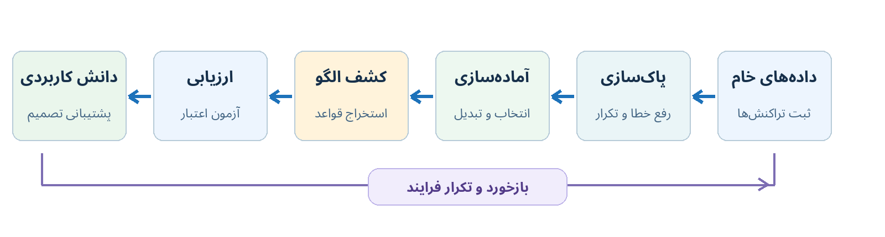
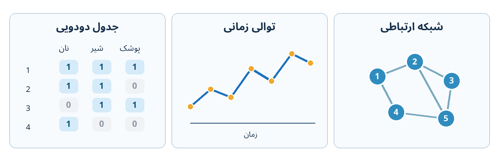
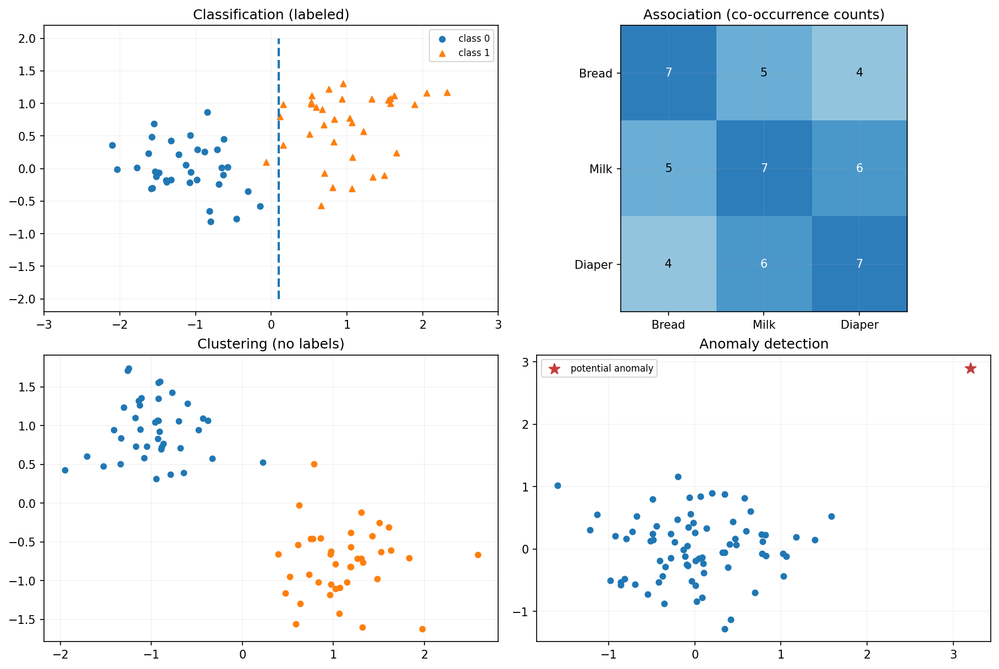
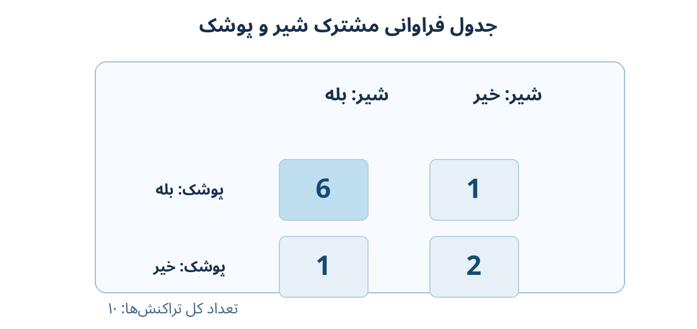
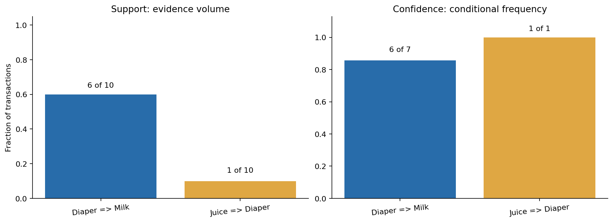
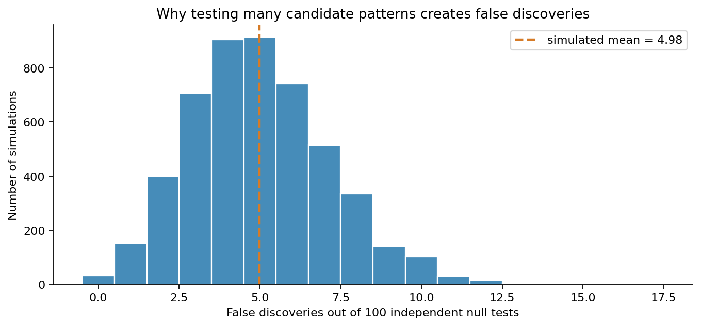
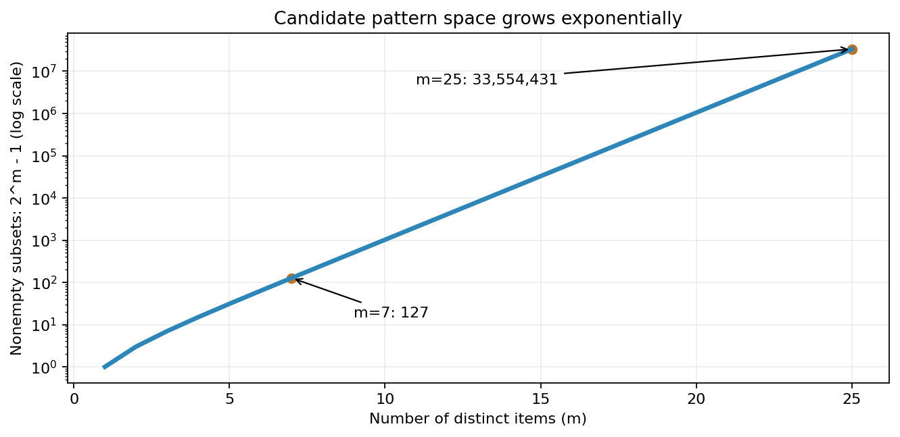

فصل اول — مبانی دادهکاوی و فرایند کشف دانش#
مقدمه و چارچوب تدوین درس#
این جزوه برای درس دادهکاوی در مقطع کارشناسی ارشد مهندسی کامپیوتر تدوین شده است. مخاطب آن دانشجویی است که با مبانی احتمال، جبر خطی، شناسایی الگو و یادگیری ماشین آشناست. از اینرو، هدف درس تکرار آموزش مقدماتی طبقهبندی، رگرسیون یا شبکههای عصبی نیست؛ تمرکز بر پرسش دیگری است: چگونه از دادههای واقعی، ساختارها و الگوهای مفید استخراج کنیم، ارزش آنها را بسنجیم و از اعتبار کشفیات اطمینان پیدا کنیم؟
مبنای علمی و منابع اصلی#
این درس با تلفیق و بازچینش دو مرجع زیر شکل گرفته است:
Jiawei Han, Jian Pei, Hanghang Tong، Data Mining: Concepts and Techniques، ویرایش چهارم، Morgan Kaufmann/Elsevier، حق نشر ۲۰۲۳. در این جزوه این کتاب را به اختصار «Han» مینامیم. این منبع برای پوشش روشهای کشف الگو، دادهکاوی پیشرفته، انواع داده و کاربردهای جدید محور اصلی است.
Pang-Ning Tan, Michael Steinbach, Anuj Karpatne, Vipin Kumar، Introduction to Data Mining، ویرایش دوم، Pearson، حق نشر ۲۰۱۹. در این جزوه آن را «Tan» مینامیم. این کتاب برای تبیین گامبهگام الگوریتمها، معیارهای ارزیابی، چالشهای دادهکاوی و بهویژه تشخیص نتایج کاذب مرجع مکمل است.
شمارهفصلها و ارجاعهای زیر بر اساس نسخههای PDF ارائهشده از همین دو کتاب و شمارههای چاپیِ درون کتاب تنظیم شدهاند. چیدمان فصلهای جزوه کپی فهرست هیچکدام از کتابها نیست؛ مباحث مرتبط ادغام شدهاند و موارد تکراری از منظر درس یادگیری ماشین خلاصهتر ارائه میشوند.
اصول تدوین و شیوهٔ تدریس#
هر فصل از یک مسئلهٔ قابل لمس آغاز میشود؛ سپس شهود، تعریف دقیق، روابط ریاضی لازم، مثال عددی با محاسبهٔ دستی، تصویر یا نمودار، پیادهسازی پایتون و تحلیل محدودیتها بههم پیوند میخورند. در صورت نیاز به استفاده از فرضهای آماری یا از دست رفتن اعتبار نتیجه، آن فرضها تصریح میشوند. شکلها و مثالهای دادهای این جزوه مستقل از تصاویر دو کتاب تهیه شدهاند؛ تبیینها نیز بازنویسی آموزشی و نه ترجمهٔ خطبهخط منابعاند.
ساختار پیشنهادی درس دادهکاوی کارشناسی ارشد#
فصل |
عنوان پیشنهادی |
منابع مبنا |
محور یادگیری |
|---|---|---|---|
۱ |
مبانی دادهکاوی و فرایند کشف دانش |
Han: فصل ۱؛ Tan: فصل ۱ |
تفاوت کشف دانش، بازیابی، مدلسازی و اعتبار الگو |
۲ |
بازنمایی داده، انواع ویژگیها و کیفیت داده |
Han: فصل ۲؛ Tan: فصل ۲ |
واحد مشاهده، نوع ویژگی، کیفیت ثبت و نمایش داده |
۳ |
معیارهای شباهت، فاصله و هندسهٔ دادهها |
Han: §۲٫۳؛ Tan: §۲٫۴ |
فاصلهها، شباهتهای مجموعهای، اطلاعات متقابل و معیار مناسب |
۴ |
پیشپردازش، نمونهگیری و کاهش بُعد |
Han: §۲٫۴–۲٫۶؛ Tan: §۲٫۳ |
پاکسازی، تبدیل، انتخاب ویژگی و کاهش بُعد |
۵ |
کشف الگوهای پرتکرار و قواعد انجمنی |
Han: فصل ۴؛ Tan: فصل ۵ |
Support، Confidence، Lift، Apriori و FP-Growth |
۶ |
الگوهای پیشرفته، ترتیبی و گرافی |
Han: فصل ۵؛ Tan: فصل ۶ |
قیود، توالی، زیرگراف و الگوهای نادر |
۷ |
طبقهبندی در دادهکاوی و ارزیابی معتبر |
Han: فصلهای ۶ و ۷؛ Tan: فصلهای ۳ و ۴ |
قوانین طبقهبندی، دادهٔ نامتوازن، سنجهها و اعتبارسنجی |
۸ |
مبانی خوشهبندی و ارزیابی خوشهها |
Han: فصل ۸؛ Tan: فصل ۷ |
K-means، سلسلهمراتبی، DBSCAN و سنجش خوشه |
۹ |
خوشهبندی پیشرفته، طیفی و گرافی |
Han: فصل ۹؛ Tan: فصل ۸ |
مدلهای احتمالاتی، EM، طیفی و زیرفضا |
۱۰ |
کشف ناهنجاری و الگوهای نادر |
Han: فصل ۱۱؛ Tan: فصل ۹ |
روشهای آماری، فاصلهای، چگالی و بازسازی |
۱۱ |
اعتبار آماری کشفیات و پیشگیری از نتایج کاذب |
Han: ارزیابی الگو و پیوست A؛ Tan: فصل ۱۰ |
آزمون فرض، آزمونهای چندگانه و FDR |
۱۲ |
مقیاسپذیری، دادههای پیچیده و مسیر پژوهش |
Han: فصلهای ۳ و ۱۲؛ Tan: بخشهای مقیاسپذیری |
دادههای بزرگ، جریان داده، گراف و مرز پژوهش |
این ترتیب هدفمند است: ابتدا ماهیت داده و معیارهای سنجش آن شناخته میشود؛ سپس الگوریتمهای جستوجوی الگو معرفی میشوند؛ در ادامه خوشهبندی و ناهنجاری با عمق مناسب بررسی میشوند؛ و نهایتاً اعتبار علمی نتایج و چالشهای مقیاس بزرگ جمعبندی میگردند. موضوع طبقهبندی عمداً از زاویهٔ مقتضیات دادهکاوی تدریس میشود تا با درس شناسایی الگو همپوشانی غیرضروری نداشته باشد.
جایگاه فصل اول#
فصل نخست تصویری واحد از چرخهٔ کشف دانش، ساختارهای داده، انواع خروجی و معیارهای اولیهٔ الگو ارائه میدهد. بهجای شروع زودهنگام از الگوریتمها، با مثال پیوستهٔ سبد خرید فروشگاه نشان داده میشود که یک قاعده چگونه از داده استخراج میشود و چرا Confidence بالا بدون Support مناسب، Lift و اعتبارسنجی، الزاماً کشف مفید نیست. این زمینهٔ مشترک برای ورود به فصلهای بعد است.
یادداشت انتشار: محتوای این مقدمه در نسخهٔ PDF نیز درج شده است.
فایلهای دریافت فصل: جزوهٔ PDF · بستهٔ کامل TEX، PDF، شکلها و کدها · آزمایشگاه تعاملی آفلاین
درس: دادهکاوی، کارشناسی ارشد مهندسی کامپیوتر
منابع اصلی: Han, Pei, Tong، ویرایش چهارم؛ Tan, Steinbach, Karpatne, Kumar، ویرایش دوم.
رویکرد: مسئلهٔ واقعی، تبیین دقیق مفاهیم، صورتبندی ریاضی، محاسبهٔ دستی و بازتولید با پایتون.
اهداف یادگیری
پس از مطالعهٔ این فصل، دانشجو باید بتواند:
دادهکاوی را از واکشی داده، یادگیری ماشین و فرایند جامع کشف دانش متمایز کند؛
یک مسئلهٔ دادهکاوی را با داده، سؤال، خروجی و معیار اعتبار صورتبندی کند؛
جدول رکوردها، پایگاه تراکنشها، توالی زمانی و گراف را از نظر ساختار داده تشخیص دهد؛
تفاوت مسائل توصیفی و پیشبینی را با نمادگذاری ریاضی توضیح دهد؛
پشتیبان، اطمینان، بالابرندگی و اهرم یک قاعدهٔ انجمنی را با دست محاسبه و تفسیر کند؛
خطر کشفیات تصادفی، دادههای اندک، سوگیری نمونه و نشت اطلاعات را شناسایی کند؛
چرایی رشد نمایی فضای جستوجوی الگوها و نیاز به الگوریتمهای مقیاسپذیر را بیان کند.
۱ـ۱. مسئلهٔ آغازین: از فاکتور فروش تا شناخت رفتار مشتری#
فرض کنید فروشگاهی آنلاین، تراکنشهای مشتریان را ثبت میکند. هر تراکنش یک سبد خرید است: فهرستی از کالاهایی که در یک سفارش خریداری شدهاند. مدیر فروشگاه فقط نمیخواهد بداند «در تراکنش شمارهٔ ۷ چه کالاهایی وجود داشت؟»؛ میخواهد پاسخ سؤالهای زیر را پیدا کند:
کدام کالاها معمولاً با هم خریداری میشوند و این همراهی چقدر قابل اتکاست؟
آیا بعضی مشتریان الگوهای خرید مشابه دارند؟
کدام سفارشها با رفتار عادی متفاوتاند؟
آیا الگویی که در دادههای گذشته دیدهایم، در دادههای آینده هم برقرار میماند؟

Fig. 1 شکل ۱ـ۱. یک فروشگاه آنلاین بهعنوان مسئلهٔ محوری فصل. تصویر آموزشی تولیدشده برای این جزوه است؛ دادهها و محاسبات فصل واقعیِ این تصویر نیستند.#
برای پرهیز از پیچیدگی غیرضروری، در تمام فصل از مجموعهٔ ساختگی و مشخصِ ۱۰ تراکنش زیر استفاده میکنیم. این دادهها صرفاً آموزشی هستند و از فروشگاه واقعی یا از جدول کتابها استخراج نشدهاند.
شناسهٔ تراکنش |
اقلام خریداریشده |
|---|---|
۱ |
نان، شیر، پوشک |
۲ |
نان، شیر |
۳ |
شیر، پوشک، تخممرغ |
۴ |
نان، شیر، پوشک، کره |
۵ |
نان، چای |
۶ |
پوشک، آبمیوه |
۷ |
نان، شیر، پوشک |
۸ |
نان، کره |
۹ |
شیر، پوشک، چای |
۱۰ |
نان، شیر، پوشک، تخممرغ |
این ۱۰ ردیف در فایل transactions.csv نیز موجودند.
نکتهٔ آموزشی: اگر فقط تعداد تراکنشهای حاوی شیر را بخواهیم، یک شمارش ساده کافی است. ولی اگر بخواهیم تمام الگوهای معنادارِ همخریدی را بدون تعیین قبلی نام کالاها پیدا کنیم، با مسئلهٔ کشف الگو روبهرو هستیم. دادهکاوی دقیقاً در چنین مسئلهای معنا پیدا میکند.
مبنای مفهومی: Han، §۱٫۱ و §۱٫۴٫۲؛ Tan، §۱٫۱ و §۱٫۴ (مثالهای تجاری و تحلیل انجمنی).
۱ـ۲. دادهکاوی چیست و چه چیزی نیست؟#
دادهکاوی (Data Mining) مجموعهای از روشهای محاسباتی برای کشف الگوها، رابطهها، ساختارها، ناهنجاریها یا مدلهای مفید از داده است؛ بهویژه زمانی که حجم یا پیچیدگی داده بررسی دستی را دشوار میکند. خروجی ممکن است یک قاعده، گروهبندی، مدل پیشبینی، مجموعهای از نقاط غیرعادی یا یک خلاصهٔ چندبُعدی باشد.
باید میان وجود یک رابطه در دادهٔ مشاهدهشده و ارزش علمی یا عملی آن تفاوت گذاشت. الگویی که فقط تصادفی ظاهر شده، روی نمونههای تازه تکرار نمیشود، یا به تصمیمی کمک نمیکند، لزوماً دانش مفید نیست.
فعالیت |
پرسش نمونه |
آیا ذاتاً دادهکاوی است؟ |
|---|---|---|
بازیابی از پایگاه داده |
«تراکنش شمارهٔ ۶ چیست؟» |
خیر؛ یک پرسوجوی مشخص است. |
گزارش آماری توصیفی |
«چند سفارش شامل شیر هستند؟» |
بهتنهایی نه؛ گزارشگیری است. |
کشف الگوی انجمنی |
«چه مجموعهکالاهایی بهطور غیرمنتظره همخرید میشوند؟» |
بله؛ بهویژه در جستوجوی خودکار میان نامزدهای فراوان. |
خوشهبندی |
«چه گروههایی از مشتریان بدون برچسب قبلی وجود دارند؟» |
بله. |
پیشبینی |
«آیا مشتری این محصول را خواهد خرید؟» |
میتواند بخشی از دادهکاوی و همچنین یادگیری ماشین باشد. |
آزمون رابطهٔ علّی |
«آیا نمایش پیشنهاد باعث افزایش فروش شد؟» |
از مشاهدهٔ همراهی بهتنهایی نتیجه نمیشود؛ به طراحی علّی مناسب نیاز دارد. |
جایگاه یادگیری ماشین و شناسایی الگو#
در یادگیری ماشین، اغلب با یک تابع یا مدل سروکار داریم که پارامترهای آن از داده تعیین میشوند. برای مثال، در یادگیری نظارتشده:
در این رابطه، \(\mathbf{x}_i\) بردار ویژگی نمونهٔ \(i\)ام، \(y_i\) برچسب یا مقدار هدف، \(\mathcal F\) خانوادهٔ مدلها و \(\ell\) تابع زیان است. این صورتبندی در درسهای یادگیری ماشین و شناسایی الگو آشناست. اما همهٔ مسئلههای دادهکاوی تابع هدفِ پیشبینی ندارند. در تحلیل قواعد انجمنی، هدف میتواند جستوجوی مجموعهای از الگوهای قابلتفسیر و سپس ارزیابی آنها باشد:
که \(\mathcal P\) فضای الگوهای نامزد، \(\operatorname{score}\) معیار انتخابِ تعریفشده برای همان مسئله و \(\tau\) آستانه است. این فرمول صورتبندی آموزشی عام است، نه تابع هدف یک الگوریتم معین؛ در عمل ممکن است چند آستانه، قید یا معیار داشته باشیم و امتیازها همیشه تکعددی نباشند.
تفاوت محوری برای این درس: یادگیری مدل یکی از ابزارهای دادهکاوی است، نه تعریف همهٔ آن. مباحث پرتکرار طبقهبندی، SVM یا شبکهٔ عصبی در این جزوه فقط هنگامی باز میشوند که به مسئلهٔ ویژهٔ دادهکاوی، اعتبار نتایج یا انتخاب روش مربوط باشند.
مبنای مفهومی: Han، §۱٫۵٫۲؛ Tan، §۱٫۳–۱٫۴. این دو کتاب در گسترهٔ اصطلاح «دادهکاوی» تفاوت تأکید دارند، نه تناقض بنیادی.
۱ـ۳. از داده تا دانش: فرایند KDD#
کشف دانش از پایگاههای داده (Knowledge Discovery in Databases; KDD) چارچوب بزرگتری است که در آن دادهٔ خام به شناختی قابل ارزیابی و استفاده تبدیل میشود. در تعریف کلاسیک، دادهکاوی مرحلهٔ اصلی استخراج الگو در این فرایند است. در کاربردهای جدید، واژهٔ «دادهکاوی» گاهی برای کل فرایند نیز استفاده میشود؛ بنابراین هنگام مطالعهٔ مقالات باید تعریف نویسنده را بررسی کرد.


Fig. 2 شکل ۱ـ۲. نمای بازطراحیشدهٔ مراحل KDD از راست به چپ. بازخورد انتهای فرایند ممکن است سبب اصلاح داده، ویژگی، سؤال یا معیار ارزیابی شود.#
برای مثال فروشگاه، نقش هر مرحله را دقیق مشخص میکنیم:
مرحله |
ورودی، عملیات و خروجی در مثال فروشگاه |
|---|---|
تعریف مسئله |
پرسش: «چه رابطهٔ همخریدی ارزش بررسی دارد؟»؛ تصمیمِ احتمالی: پیشنهاد کالا یا طراحی چیدمان. |
گردآوری |
دریافت تراکنشها، شناسهٔ سفارش و اقلام خریداریشده، با تعیین بازهٔ زمانی و جامعهٔ مشتریان. |
پاکسازی و یکپارچهسازی |
یکسانسازی نام کالا، حذف ثبت تکراری واقعی، رسیدگی به فاکتور ناقص و اصلاح ناسازگاری شناسهها. |
انتخاب و تبدیل |
نمایش هر سفارش بهصورت مجموعهٔ کالاها یا بردار حضور/عدم حضور؛ تعیین گروه کالاها و بازهٔ تحلیل. |
کاوش داده |
شمارش مجموعههای پرتکرار، تشکیل قواعد انجمنی، یا یافتن گروههای مشتری. |
ارزیابی و تفسیر |
بررسی حجم شواهد، Lift، ثبات زمانی، نرخ خطا و سود واقعی تصمیمِ پیشنهادی. |
بهکارگیری و بازخورد |
استفادهٔ آزمایشی از الگوی پذیرفتهشده؛ مشاهدهٔ نتیجه و اصلاح فرایند در دور بعد. |
چرا پاکسازی و ارزیابی جزئی از مسئلهاند؟#
فرض کنید دادهها گاهی «شیر کمچرب» و گاهی «شیر» را با کدهای متفاوت ثبت کنند. اگر هدف تحلیل در سطح «نوع کالا» باشد، محاسبهٔ فراوانی پیش از تعریف یکسان کالا گمراهکننده خواهد بود. در مقابل، اگر تفاوت نوع شیر برای تصمیم فروش مهم باشد، ادغام این دو کد اطلاعات مفید را از بین میبرد. پس پاکسازی فقط حذف خطا نیست؛ بخشی از تعریف مسئله و دقت اندازهگیری است.
همچنین اگر با مشاهدهٔ نتیجه روی دادهٔ آزمون، آستانهٔ قاعده را تغییر دهیم و همان آزمون را دوباره شاهدِ بیطرف معرفی کنیم، ارزیابی مخدوش شده است. این موضوع در فصلهای ارزیابی و کشفیات کاذب با تفصیل بیشتر خواهد آمد.
مبنای مفهومی: Han، §۱٫۲، شکل ۱٫۱؛ Tan، §۱٫۱، شکل ۱٫۱. شکل این جزوه کپی تصویری از کتاب نیست.
۱ـ۴. داده چه شکل ریاضی دارد؟#
«داده» همیشه یک ماتریس عددی معمولی نیست. روش جستوجو باید با ساختار داده و پرسش هماهنگ شود.
۱ـ۴ـ۱. نمایش رکوردی و ماتریسی#
برای \(n\) نمونه و \(d\) ویژگی عددی، نمایش متعارف عبارت است از:
در این نمادگذاری، سطر یک مشاهده و ستون یک ویژگی است. شرط \(\mathbf X\in\mathbb R^{n\times d}\) فقط وقتی درست است که همهٔ ویژگیها عددی نمایش داده شوند؛ در دادههای واقعی ممکن است ستونهای دستهای، متنی یا مقادیر گمشده داشته باشیم و به نمایش مناسبتری نیاز باشد.
اگر \(d\) ویژگی مانند «خرید نان»، «خرید شیر» و «خرید پوشک» صرفاً حضور کالا را نشان دهند، یک ماتریس دودویی تعریف میکنیم:
برای سه کالای نخست و چهار تراکنش ابتدای جدول داریم:
ترتیب ستونها بهترتیب «نان، شیر، پوشک» است. این ماتریس با ماتریس ویژگیهای عددیِ پیوسته یکسان نیست؛ مثلاً فاصلهٔ اقلیدسی در آن لزوماً بهترین تعبیر شباهت دو مشتری نیست. فصل سوم دربارهٔ انتخاب معیار شباهت بحث میکند.
۱ـ۴ـ۲. نمایش تراکنشی و مجموعهای#
مجموعهٔ اقلام ممکن را با \(\mathcal I\) و سبد خرید شمارهٔ \(i\) را با \(T_i\) نشان میدهیم:
در اینجا \(T_1=\{\text{نان، شیر، پوشک}\}\). نمایش مجموعهای فقط حضور کالا را نگه میدارد: اگر در یک سفارش دو بسته شیر خریداری شود، باید برای حفظ تعداد یا مقدار خرید نمایشی غنیتر انتخاب کنیم.
۱ـ۴ـ۳. توالی و گراف#
یک توالی زمانی را میتوان بهصورت \(\mathbf s=(\mathbf x_1,\ldots,\mathbf x_T)\) نمایش داد، که ترتیب زمانی در آن مهم است. برای مثال «خرید پوشک پس از خرید شیر» با «خرید همزمان پوشک و شیر» متفاوت است. در گراف، داده بهصورت \(G=(V,E)\) شامل مجموعهٔ رأسها و یالهاست؛ برای تحلیل شبکهٔ ارتباط مشتریان یا ارتباط کالاها.


Fig. 3 شکل ۱ـ۳. سه نمایش متفاوت از اطلاعات: ماتریس دودویی، توالی زمانی و گراف. این شکلها شماتیکاند؛ هدف نشاندادن اثر ساختار داده بر تعریف الگو است.#
بسیاری از خطاهای دادهکاوی زمانی رخ میدهند که ساختار اصلی را نادیده بگیریم؛ مثلاً نمونههای زمانی وابسته را تصادفی و مستقل فرض کنیم، یا یالهای گراف را بهاشتباه رکوردهای مستقل در نظر بگیریم.
مبنای مفهومی: Han، §۱٫۳ و §۱٫۴؛ Tan، §۱٫۲ و فصل ۲. فرمولهای نمادگذاری فوق برای تدریس یکپارچه شدهاند.
۱ـ۵. مسائل اصلی دادهکاوی در یک چارچوب واحد#
دو طبقهبندی مکمل مفیدند: در کتاب Tan، تمایز بنیادی بین مسائل پیشبینی و مسائل توصیفی پررنگ است؛ در کتاب Han، طیف وسیعتری از انواع دانشی که میتوان استخراج کرد ارائه میشود. جدول زیر ترکیب آموزشی این دو نگاه است.
مسئله |
دادهٔ موردنیاز |
خروجی |
معیار نمونه برای ارزیابی |
|---|---|---|---|
قواعد انجمنی |
تراکنشها یا رخدادها |
\(A\Rightarrow B\) |
Support، Confidence، Lift |
طبقهبندی |
نمونه و برچسب دستهای |
\(\widehat y=f(\mathbf x)\) |
خطای آزمون، Precision، Recall |
رگرسیون |
نمونه و هدف عددی |
\(\widehat y=f(\mathbf x)\in\mathbb R\) |
MAE، MSE |
خوشهبندی |
نمونههای معمولاً بیبرچسب |
گروهها یا عضویتهای نرم |
انسجام و جدایی؛ اعتبارسنجی مستقل |
تشخیص ناهنجاری |
نمونهها و تعریف رفتار مرجع |
امتیاز یا نشانگر غیرعادیبودن |
نرخ کشف و هشدار کاذب، در صورت وجود حقیقت مبنا |
خلاصهسازی چندبعدی |
ابعاد و سنجهها |
جدول تجمیعی، مکعب داده، گزارش |
فایدهٔ تصمیم و درستی تجمیع |
الگوهای ترتیبی/گرافی |
توالیها یا شبکهها |
زیرتوالی یا زیرگراف پرتکرار |
فراوانی معتبر، قیود و تفسیر کاربردی |


Fig. 4 شکل ۱ـ۴. چهار مسئلهٔ اصلی: بالا چپ، جداسازی کلاسهای برچسبدار؛ بالا راست، شمارش همرخدادی کالاها بر اساس دادهٔ مثال این فصل؛ پایین چپ، گروهبندی بدون برچسب؛ پایین راست، نشانهگذاری یک مشاهدهٔ نامعمول. مجموعهنقاط دیگر در این شکل صرفاً ساختگی و شماتیکاند.#
صورتبندی فشردهٔ مسائل#
پیشبینی: با داشتن دادهٔ نظارتشده، تابعی برای پیشبینی متغیر هدف میسازیم. اگر \(y\) دستهای باشد مسئله طبقهبندی و اگر پیوسته باشد رگرسیون است. یک پیشبینی خوب باید روی نمونههای ندیده ارزیابی شود، نه صرفاً روی دادهٔ آموزش.
خوشهبندی: بهصورت ساده میخواهیم دادهها را به گروههای \(C_1,\ldots,C_K\) تقسیم کنیم. در خوشهبندی سخت:
در یک نمونهٔ شناختهشده، K-means، مراکز \(\boldsymbol\mu_k\) را طوری مییابد که مجموع مربعات فاصلهٔ نقاط از مرکز خوشه کمینه شود:
این تابع هدف فقط برای خانوادهٔ خاص K-means مناسب است، نه تعریف عمومی خوشهبندی؛ خوشههای کشیده، غیرمحدب یا شبکهای ممکن است با روشهای دیگر بهتر کشف شوند.
ناهنجاری: یک تابع امتیاز \(a(\mathbf x;\mathcal D)\) میزان نامعمولبودن مشاهده را نسبت به دادهٔ مرجع میسنجد. سپس در صورت نیاز، قاعدهای مانند \(a(\mathbf x;\mathcal D)>\tau\) تعریف میکنیم. آستانه بدون توجه به هزینهٔ هشدار اشتباه، کمیابی رخداد و تغییر رفتار در زمان نباید انتخاب شود.
انجمنی: بهجای پیشبینی یک برچسب مشخص، رابطههای محتمل میان مجموعهها را جستوجو میکنیم. این مورد را در بخش بعد، با محاسبهٔ دقیق بررسی میکنیم.
مبنای مفهومی: Han، §۱٫۴٫۱–۱٫۴٫۷؛ Tan، §۱٫۴. صورتبندی K-means برای ایجاد شهود است و تحلیل کامل آن به فصل هشتم موکول میشود.
۱ـ۶. نخستین محاسبهٔ ریاضی: آیا «پوشک و شیر» واقعاً همراهاند؟#
در این بخش، یک قاعدهٔ انجمنی را بدون استفاده از کتابخانهٔ آماده از دادهٔ ۱۰ تراکنش به دست میآوریم. هدف یادگیری دقیق مفاهیمی است که در فصل پنجم به الگوریتم Apriori و FP-Growth منجر میشوند.
۱ـ۶ـ۱. مجموعهٔ اقلام و تابع نشانگر#
برای هر مجموعهکالای \(A\subseteq\mathcal I\)، تابع نشانگر زیر تعریف میشود:
تعداد تراکنشهای شامل \(A\) برابر است با:
در مثال، \(n=10\) و با شمارش دستی به نتایج زیر میرسیم:
شش تراکنش دارای هر دو کالا شمارههای ۱، ۳، ۴، ۷، ۹ و ۱۰ هستند.
۱ـ۶ـ۲. پشتیبان (Support)#
پشتیبان یا فراوانی نسبی یک مجموعهکالا، سهم تراکنشهایی است که آن مجموعه را شامل میشوند:
بنابراین:
معنای عدد \(0.60\) این است که ۶۰ درصد همین ۱۰ تراکنش شامل هر دو کالا هستند؛ هنوز دربارهٔ تمام مشتریان یا آینده ادعایی نکردهایم. اگر دههزار تراکنش مستقل و مشابه داشتیم، چنین نسبتی از نظر حجم شواهد متفاوت تفسیر میشد.
۱ـ۶ـ۳. اطمینان (Confidence)#
برای قاعدهٔ \(A\Rightarrow B\) با \(A\cap B=\varnothing\)، اطمینان برابر است با:
این کمیت، فراوانی شرطیِ مشاهدهشده است. در تعبیر احتمالاتی، اگر انتخاب تراکنش بهطور تصادفی از جامعهٔ موردنظر انجام شود، تخمینی برای \(P(B\mid A)\) به دست میدهد.
در مثال:
تفسیر: از هفت تراکنش دارای پوشک، شش تراکنش شیر هم داشتهاند؛ یعنی حدود ۸۵٫۷۱ درصد از تراکنشهای حاوی پوشک در این داده شیر نیز دارند. این عدد احتمالِ علّیِ خرید شیر بر اثر خرید پوشک نیست.
۱ـ۶ـ۴. چرا Confidence بهتنهایی کافی نیست؟#
در همین دادهها، شیر در ۷ تراکنش از ۱۰ تراکنش دیده میشود:
بنابراین صرفِ مشاهدهٔ اطمینان ۸۵٫۷۱ درصد کافی نیست؛ باید آن را با فراوانی معمول شیر، یعنی ۷۰ درصد، مقایسه کرد. اگر شیری تقریباً در همهٔ سبدها وجود داشته باشد، قواعد زیادی با نتیجهٔ «شیر» اطمینان بالایی خواهند داشت، بیآنکه همراهی خاصی را نشان دهند.
۱ـ۶ـ۵. بالابرندگی (Lift)#
بالابرندگی نسبت فراوانی شرطی مشاهدهشده به فراوانی بدون شرطِ بخش نتیجه است:
به شرط اینکه پشتیبان \(A\) و \(B\) مثبت باشند. در این نمونه:
به زبان ساده، حضور شیر در تراکنشهای دارای پوشک در این نمونه حدود ۱٫۲۲ برابر نرخ معمول حضور شیر است. سه حالت مهم:
\(\operatorname{lift}>1\): همراهی مثبت نسبت به انتظار حاصل از استقلال؛
\(\operatorname{lift}=1\): همرخدادی برابر انتظار در حالت استقلال تجربی؛
\(\operatorname{lift}<1\): همراهی منفی نسبت به آن انتظار.
عدد Lift بهخودیخود آزمون معنیداری نیست؛ نسبتهای بزرگ با دادهٔ کم میتوانند تصادفی باشند.
۱ـ۶ـ۶. اهرم (Leverage)#
یک سنجهٔ مکمل، تفاوت احتمال مشترک مشاهدهشده با احتمال مشترکِ پیشبینیشده زیر فرض استقلال است:
در مثال:
بنابراین نسبت به مدل استقلالی ساختهشده از فراوانیهای همین داده، سهم همخریدیِ مشاهدهشده ۱۱ واحد درصد بیشتر است. Leverage و Lift هر دو دربارهٔ همراهی هستند، اما مقیاس متفاوتی دارند: یکی اختلاف مطلق و دیگری نسبت را میسنجد.
۱ـ۶ـ۷. محاسبه از جدول توافقی#
همان اطلاعات را میتوان در جدول \(2\times2\) نگه داشت. عددهای جدول زیر بهصورت دستی از ۱۰ تراکنش شمارش شدهاند.


Fig. 5 شکل ۱ـ۵. جدول توافقی شیر و پوشک: ۶ تراکنش دارای هر دو کالا، ۱ تراکنش فقط دارای پوشک، ۱ تراکنش فقط دارای شیر، و ۲ تراکنش فاقد هر دو کالا.#
با نمایش متعارف تعدادها به شکل \(n_{11},n_{10},n_{01},n_{00}\) داریم:
در این نمادگذاری، شاخص اول «پوشک» و شاخص دوم «شیر» است. میتوان مستقیماً نوشت:
جایگذاری \((6,1,1,2)\) دوباره \(6/10\)، \(6/7\) و \(60/49\) را میدهد. این محاسبه مهم است، زیرا بسیاری از معیارهای ارزیابی قواعد، صرفاً تابع چهار خانهٔ چنین جدولیاند.
۱ـ۶ـ۸. قاعدهٔ ظاهراً عالی با شواهد ضعیف#
در دادهٔ ما آبمیوه فقط یکبار خریداری شده و همان سفارش پوشک هم داشته است. بنابراین:
اگر فقط Confidence و Lift را ببینیم، ممکن است این قاعده از قاعدهٔ «پوشک و شیر» جذابتر به نظر برسد. ولی قاعدهٔ نخست فقط بر یک تراکنش استوار است. یک خرید آینده میتواند تخمین آن را بهشدت تغییر دهد. از این مثال نتیجه میگیریم که قدرت ظاهری الگو و میزان شواهدِ پشتیبان دو پرسش متفاوتاند.


Fig. 6 شکل ۱ـ۶. مقایسهٔ دو قاعدهٔ مثال: قاعدهٔ آبمیوه اطمینان ۱۰۰٪ دارد، اما فقط در یک تراکنش دیده شده است. اعداد نمودار فقط از دادهٔ ساختگی این فصل حاصل شدهاند.#
مبنای مفهومی: Han، §۱٫۴٫۲ و §۴٫۱–۴٫۳؛ Tan، §۱٫۴ و §۵٫۱، §۵٫۷. صورتبندی جدول دهتراکنشی و محاسبات، تألیف آموزشی مستقلاند.
۱ـ۷. از «الگوی مشاهدهشده» تا «کشف معتبر»#
دادهکاوی اغلب فرضیهها را از خود داده تولید میکند. همین ویژگی مزیت مهم آن است، اما یک خطر نیز ایجاد میکند: اگر تعداد زیادی الگو را بررسی کنیم، بعضی از آنها بدون وجود رابطهٔ پایدار، خوب به نظر خواهند رسید.
۱ـ۷ـ۱. جستوجوی فراوان و کشفیات کاذب#
فرض کنید \(m\) فرضیهٔ کاملاً بیاثر را جداگانه با سطح خطای نوع اول \(\alpha\) آزمایش میکنیم. تعداد مورد انتظار ردهای اشتباه برابر است با:
به شرط اینکه هر آزمون تحت فرض صفر، احتمال خطای نوع اول \(\alpha\) داشته باشد. این برابری به استقلال آزمونها نیاز ندارد، زیرا امید ریاضی جمع شاخصها جمعپذیر است.
اما اگر علاوه بر آن، رویدادهای خطای آزمونها مستقل فرض شوند، احتمال دستکم یک نتیجهٔ مثبتِ کاذب برابر است با:
برای \(m=100\) آزمون مستقل و \(\alpha=0.05\):
یعنی اگر تمام فرضیهها در واقع بیاثر باشند، انتظار داریم بهطور متوسط پنج هشدار اشتباه ببینیم و احتمال دستکم یک هشدار اشتباه بسیار بالاست. در قواعد انجمنی، آزمونها معمولاً وابستهاند؛ پس فرمول استقلال، فقط مثال روشنکننده است، نه محاسبهٔ دقیق برای هر پایگاه تراکنش.


Fig. 7 شکل ۱ـ۷. شبیهسازی آموزشی ۵۰۰۰ بار تکرارِ ۱۰۰ آزمونِ صفر مستقل با \(p\)-value یکنواخت و آستانهٔ ۰٫۰۵. میانگین تعداد کشفیات کاذب نزدیک ۵ است. این شبیهسازی جایگزین آزمون واقعی قواعد انجمنی نیست.#
در فصل یازدهم با روشهای کنترل خطای خانوادهای (FWER)، نرخ کشف کاذب (FDR)، بازنمونهگیری و آزمون جایگشت آشنا میشویم. فعلاً کافی است بپذیریم که یافتن قاعده بر اثر جستوجوی بسیار، اثبات مستقل اعتبار آن نیست.
۱ـ۷ـ۲. سه پرسش برای داوری یک الگو#
شواهد: چند مشاهده واقعاً پشت الگو هستند؟ آیا داده، نمایندهٔ جامعهٔ هدف است؟
اعتبار بیرونی: آیا الگو در دوره، فروشگاه یا نمونهٔ مستقلی که برای انتخاب آن استفاده نشده نیز مشاهده میشود؟
کاربرد: اگر بر مبنای الگو تصمیم بگیریم، سود، هزینه، ریسک و پیامد آن چیست؟
برای الگوی پوشک و شیر، ممکن است نمایش همزمان دو کالا در یک کمپین مفید باشد؛ اما از همخریدی بهتنهایی نمیتوان نتیجه گرفت که نمایش پوشک موجب افزایش خرید شیر میشود. شاید عامل دیگری، مانند مرحلهٔ زندگی خانوار، باعث خرید هر دو کالا شده باشد. اثبات اثر علّی به طراحی مناسب آزمایش، کنترل مخدوشگرها یا فرضهای شناسایی معتبر نیاز دارد.
۱ـ۷ـ۳. سوگیری انتخاب و نشت اطلاعات#
اگر فقط مشتریان عضو یک باشگاه وفاداری داده داده باشند، الگوی کشفشده شاید رفتار تمام مشتریان را نشان ندهد. همچنین اگر آستانههای الگوریتم را پس از دیدن عملکرد روی دادهٔ آزمون تغییر دهیم، دادهٔ آزمون دیگر ارزیابی بیطرف نخواهد بود. تفکیک دادهٔ اکتشافی، تنظیم و ارزیابی نهایی در پروژهٔ دادهکاوی نیز ضروری است؛ در دادههای زمانی، تقسیم زمانمحور گاهی مناسبتر از تقسیم تصادفی است.
مبنای مفهومی: Han، §۱٫۴٫۷ و §۱٫۷؛ Tan، §۱٫۲، §۳٫۸ و مخصوصاً فصل ۱۰ (Avoiding False Discoveries). فرمول احتمال خطا، بسط آموزشی از اصول آزمونهای چندگانه است.
۱ـ۸. چرا به الگوریتمهای ویژه و مقیاسپذیر نیاز داریم؟#
در مثال آموزشی فقط هفت نوع کالا داشتیم. اگر مجموعهٔ اقلام \(m\) عضو داشته باشد، تعداد همهٔ زیرمجموعههای غیرتهیِ ممکن برابر است با:
این برابری از بسط دوجملهای \((1+1)^m\) به دست میآید: هر کالا یا وارد زیرمجموعه میشود یا نمیشود؛ تنها حالت «هیچ کالایی انتخاب نشود» کنار گذاشته میشود.
برای \(m=7\)، تعداد زیرمجموعهها \(127\) است؛ اما برای \(m=25\) داریم:
این فقط تعداد نامزدهای بالقوه است، نه تعداد الگوهای واقعاً پرتکرار. اگر بخواهیم برای هر نامزد تکتک \(n\) تراکنش را بررسی کنیم، هزینهٔ کارِ روش کاملاً ساده در حد \(O(n\,m\,2^m)\) با فرض نمایش و آزمون عضویتِ ساده میشود. این مقدار یک کران مرتبهای آموزشی برای روش خام است؛ زمان واقعی به پیادهسازی، ساختار داده و تعریف هزینهٔ آزمون بستگی دارد.


Fig. 8 شکل ۱ـ۸. رشد نمایی تعداد زیرمجموعههای نامزد با افزایش شمار کالاها. محور عمودی لگاریتمی است؛ بنابراین خط تقریباً مستقیم روی نمودار، رشد نمایی را نشان میدهد.#
از همینجا ایدهٔ اصلی الگوریتمهای کارآمدِ فصل پنجم شکل میگیرد: بخش بزرگی از فضای جستوجو را بدون شمارش همهٔ نامزدها حذف کنیم. یکی از ابزارها، خاصیت یکنواییِ پشتیبان است: اگر \(A\subseteq B\)، آنگاه
دلیل: هر تراکنشی که مجموعهٔ بزرگتر \(B\) را شامل میشود، حتماً مجموعهٔ کوچکتر \(A\) را هم شامل میشود؛ پس شمارش \(B\) نمیتواند از شمارش \(A\) بیشتر باشد. نتیجهٔ عملی: اگر یک مجموعهکالا از آستانهٔ حداقل پشتیبان کمتر باشد، هیچ ابرمجموعهای از آن نمیتواند از همان آستانه عبور کند. این مبنای هرس نامزدها در Apriori است.
سایر چالشهای دادهکاوی نیز مهماند: شمار زیاد رکوردها، ابعاد بالا، دادهٔ پراکنده و ناهمگون، دادههای جاری، منابع توزیعشده، و محدودیت حریم خصوصی. در همهٔ این موارد، انتخاب یک مدل با دقت بالا کافی نیست؛ الگوریتم باید از نظر زمان، حافظه و اعتبار خروجی نیز قابل استفاده باشد.
مبنای مفهومی: Tan، §۱٫۲؛ Han، §۱٫۴٫۲ و فصل ۴. برهان خاصیت پشتیبان در اینجا بهعنوان پیشزمینهٔ Apriori آورده شده است.
۱ـ۹. بازتولید محاسبات با پایتون#
برای اینکه فاصلهای میان محاسبهٔ دستی و اجرای رایانهای باقی نماند، فایل chapter01_example.py همان ۱۰ تراکنش را میخواند و Support، Confidence، Lift و Leverage سه قاعده را محاسبه میکند. همچنین دفترچهٔ chapter01_example.ipynb شامل جدول تراکنشها، محاسبهٔ قواعد، نمودار و شبیهسازی کشفیات تصادفی است.
برای محاسبهٔ دستی/ماشینی، تابع شمارش زیر بخش اصلی منطق است:
def count(baskets, *items):
wanted = set(items)
return sum(wanted <= basket for basket in baskets)
# baskets: فهرست مجموعهکالاهای موجود در ۱۰ تراکنش
# count(baskets, "پوشک", "شیر") # مقدار: 6
نمونهٔ خروجی برنامهٔ اجراشده:
پوشک => شیر: A=7 B=7 AB=6 support=0.6000 confidence=0.8571 lift=1.2245 leverage=0.1100
آبمیوه => پوشک: A=1 B=7 AB=1 support=0.1000 confidence=1.0000 lift=1.4286 leverage=0.0300
نان => شیر: A=7 B=7 AB=5 support=0.5000 confidence=0.7143 lift=1.0204 leverage=0.0100
خواندن این خروجی باید با تفسیر علمی همراه باشد: اطمینان بالای یک قاعده برای توصیهٔ قطعی کافی نیست، Lift نزدیک به یک میتواند رابطهٔ ناچیزی نشان دهد، و مقادیر همهٔ معیارها بر مبنای همین نمونهٔ کوچکاند.
۱ـ۱۰. نکاتی که در دو کتاب تأکید متفاوت دارند#
موضوع |
تأکید Han–Pei–Tong |
تأکید Tan–Steinbach–Karpatne–Kumar |
انتخاب آموزشی این جزوه |
|---|---|---|---|
جایگاه KDD |
مراحل گستردهٔ تبدیل داده به دانش |
KDD شامل پیشپردازش، دادهکاوی و پسپردازش |
فرایند کامل با توجه به چرخهٔ بازخورد توضیح داده شد. |
طبقهبندی مسائل |
دامنهٔ متنوعِ دانش قابل کشف |
تمایز روشن وظایف پیشبینی و توصیفی |
هر دو طبقهبندی با مثال و نمادگذاری یکجا ارائه شد. |
چالشهای مهندسی |
مقیاسپذیری و انواع داده و کاربرد |
مقیاس، بُعد، ناهمگنی، توزیع و تحلیل غیرسنتی |
تفاوت «فضای الگو» و «هزینهٔ پردازش داده» برجسته شد. |
معتبر بودن کشف |
جالببودن، سودمندی، تازگی و اعتبار |
فصل مستقل دربارهٔ پرهیز از کشفیات کاذب |
از فصل اول میان کشف اولیه و تأیید آماری تفکیک گذاشته شد. |
این مقایسه بازنویسی موضوعی دو منبع است؛ ادعا نمیکند که هر دو کتاب روابط این فصل را با همین مثالها یا ترتیب ارائه کردهاند.
۱ـ۱۱. تمرینهای پایانی#
تمرین ۱ — محاسبهٔ دقیق (دستی). برای قاعدهٔ «نان \(\Rightarrow\) شیر» جدول توافقی بسازید. Support، Confidence، Lift و Leverage را محاسبه و با خروجی برنامه مقایسه کنید. توضیح دهید چرا Confidence حدود ۰٫۷۱۴ است، ولی Lift تنها کمی بیشتر از یک است.
تمرین ۲ — حساسیت به یک داده. اگر به تراکنش ششم، «شیر» اضافه شود، هر چهار معیار قاعدهٔ «پوشک \(\Rightarrow\) شیر» چه تغییری میکنند؟ شمارشها را ابتدا دستی بنویسید. آیا با این تغییر یکتراکنشی میتوان دربارهٔ پایداری قاعده نتیجه گرفت؟
تمرین ۳ — اختلاف جهت قواعد. یک نمونهٔ تازه با ۲۰ تراکنش طراحی کنید که در آن \(\operatorname{conf}(A\Rightarrow B)\) با \(\operatorname{conf}(B\Rightarrow A)\) تفاوت زیاد داشته باشد؛ نشان دهید Support مشترک و Lift نسبت به جابهجایی \(A\) و \(B\) تغییر نمیکنند.
تمرین ۴ — برهان و هرس. ثابت کنید اگر \(A\subseteq B\)، پشتیبان \(B\) نمیتواند از پشتیبان \(A\) بزرگتر باشد. بر اساس این رابطه توضیح دهید چگونه میتوان تمام ابرمجموعههای یک مجموعهٔ کمتکرار را از جستوجو کنار گذاشت.
تمرین ۵ — اعتبار علمی. برای \(m=20\) و \(\alpha=0.05\)، زیر فرض مستقلبودن خطاها، احتمال دستکم یک نتیجهٔ مثبتِ کاذب را محاسبه کنید. سپس توضیح دهید چرا این محاسبه ممکن است برای قواعد انجمنیِ همپوشان دقیق نباشد.
تمرین ۶ — طراحی مسئله. یک پایگاه دادهٔ آموزشی دانشگاه با اطلاعات ثبتنام دانشجویان در درسها فرض کنید. یک پرسوجوی ساده، یک مسئلهٔ کشف الگوی انجمنی، یک مسئلهٔ خوشهبندی و یک مسئلهٔ پیشبینی پیشنهاد کنید. برای هر مسئله، واحد مشاهده، ورودی، خروجی و روش ارزیابی را مشخص کنید.
تمرین ۷ — استقلال و علیت. فرض کنید Lift بین دو کالا برابر ۱٫۵ است. دو توضیح غیرعلّی برای این همراهی پیشنهاد دهید. برای بررسی ادعای «پیشنهاد کالای A، خرید B را بیشتر میکند» چه نوع مطالعهای مناسبتر است؟
۱ـ۱۲. جمعبندی فصل#
دادهکاوی فقط «اجرای یک الگوریتم روی یک جدول» نیست. ابتدا باید سؤال را درست صورتبندی کنیم، نمایش مناسب داده را انتخاب کنیم و بدانیم الگویی که استخراج میشود چه کمیتی را اندازه میگیرد. سپس باید میان فراوانی مشاهدهشده، قدرت رابطه، حجم شواهد، تعمیمپذیری و اثر عملی تفاوت بگذاریم. مثال این فصل نشان داد که Confidence بالا میتواند از یک نمونهٔ منفرد به دست آید و جستوجوی گسترده ممکن است تعداد زیادی کشف کاذب ایجاد کند.
در فصل دوم، همین مسیر را از سمت داده ادامه میدهیم: ویژگی چیست، مقیاس اندازهگیری چگونه بر عملیات مجاز اثر میگذارد، کیفیت داده چگونه سنجیده میشود، و خطاهای ثبت یا نمونهگیری چه اثری بر استخراج الگو دارند.
نقشهٔ ادامهٔ درس و اتصال به منابع#
شماره صفحهها در جدول زیر، شمارههای چاپی داخل خود کتابها هستند و لزوماً با شمارهٔ صفحه در فایل PDF برابر نیستند. بعضی فصلهای درس از چند بخش پراکنده تشکیل میشوند.
فصل درس |
موضوع |
Han، ویرایش ۴ |
Tan، ویرایش ۲ |
|---|---|---|---|
۱ |
مبانی و KDD |
فصل ۱، ص ۱–۱۹ |
فصل ۱، ص ۱–۱۳؛ فصل ۱۰، ص ۷۵۵–۷۷۶ (مکمل اعتبار) |
۲ |
نمایش و کیفیت داده |
§۲٫۱–۲٫۲ و §۲٫۴، ص ۲۴–۴۳ و ۵۵–۶۳ |
§۲٫۱–۲٫۲، ص ۲۶–۵۰ |
۳ |
شباهت، فاصله و اطلاعات |
§۲٫۳، ص ۴۳–۵۵ |
§۲٫۴، ص ۷۱–۹۹ |
۴ |
پیشپردازش و کاهش بُعد |
§۲٫۴–۲٫۶، ص ۵۵–۷۹ |
§۲٫۳، ص ۵۰–۷۱ |
۵ |
الگوها و قواعد انجمنی |
فصل ۴، ص ۱۴۵–۱۶۹ |
فصل ۵، ص ۳۵۷–۴۱۸ |
۶ |
الگوهای ترتیبی و گرافی |
فصل ۵، ص ۱۷۵–۲۳۲ |
فصل ۶، ص ۴۵۱–۵۰۱ |
۷ |
طبقهبندی و ارزیابی |
فصلهای ۶ و ۷، ص ۲۳۹–۳۶۹ (گزینشی) |
فصلهای ۳ و ۴، ص ۱۱۳–۳۳۳ (گزینشی) |
۸ |
خوشهبندی پایه |
فصل ۸، ص ۳۷۹–۴۲۵ |
فصل ۷، ص ۵۲۵–۵۹۶ |
۹ |
خوشهبندی پیشرفته |
فصل ۹، ص ۴۳۱–۴۷۹ |
فصل ۸، ص ۶۱۳–۶۹۰ |
۱۰ |
تشخیص ناهنجاری |
فصل ۱۱، ص ۵۵۷–۶۰۰ |
فصل ۹، ص ۷۰۳–۷۴۰ |
۱۱ |
اعتبارسنجی کشفیات |
§۴٫۳ و پیوست A.1 |
فصل ۱۰، ص ۷۵۵–۸۰۰ |
۱۲ |
مقیاسپذیری و پژوهش |
فصلهای ۳ و ۱۲، ص ۸۵–۱۳۳ و ۶۰۵–۶۵۲ |
§۱٫۲، §۸٫۵ و مباحث دادههای پیچیده در فصل ۶ |
برای جلوگیری از همپوشانی زیاد با درس یادگیری ماشین، فصل هفتم بر مسائل ویژهٔ دادهکاوی مانند قواعد طبقهبندی، عدمتوازن، هزینهٔ خطا و اعتبار ارزیابی تمرکز خواهد کرد؛ آموزش از صفرِ تمام مدلهای کلاسیک در دستور اصلی قرار نمیگیرد. همچنین فصل مستقل یادگیری عمیق از کتاب Han در هستهٔ این برنامه تکرار نشده و فقط کاربردهای مرتبط آن بررسی میشوند.
منابع#
Han, J., Pei, J., & Tong, H. Data Mining: Concepts and Techniques, 4th ed., Morgan Kaufmann/Elsevier, ©2023. مباحث استفادهشده در این فصل: §۱٫۱–۱٫۷؛ برای پیشنمایش ریاضی قواعد: §۴٫۱–۴٫۳؛ برای نقشهٔ درس، فهرست کامل فصلها.
Tan, P.-N., Steinbach, M., Karpatne, A., & Kumar, V. Introduction to Data Mining, 2nd ed., Pearson, ©2019. مباحث استفادهشده در این فصل: §۱٫۱–۱٫۴؛ برای معیارهای قواعد: §۵٫۱ و §۵٫۷؛ برای مسئلهٔ کشفیات کاذب: §۱۰٫۱؛ برای نقشهٔ درس، فهرست کامل فصلها.
شکلهای فرایندی و نمودارها برای این جزوه تولید شدهاند و بازتولید تصاویر کتابها نیستند. دادهها و نتایج عددی مثال اصلی نیز ساختگی، صریح و قابل بازتولیدند.